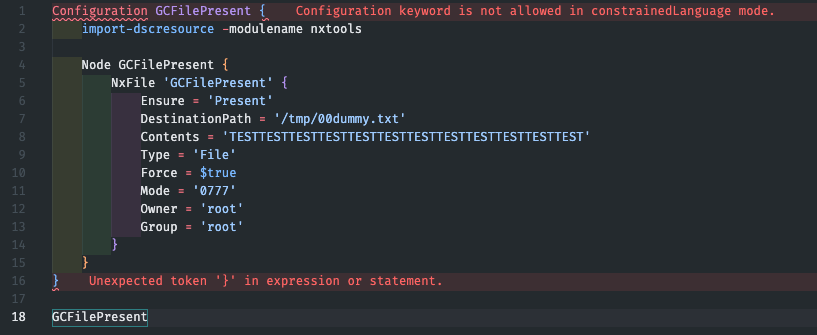

Azure Policy Guest Configuration for Linux - Part 1¶
I'm currently checking out Azure Policy Guest Configuration for Linux VMs and will note down my progress made here. The whole process took me a while to understand, also I haven't used DSC before. Learning on the fly!
Objectives¶
- Audit that a user is present on the system
- Audit that a file with specific content is present in a specific path
- Audit that a service is running
- Continuous remediation of non-compliant systems
Everything is available in this Github repo: https://github.com/joxz/guestconfiguration-linux
Notes
- The name is now changing to Azure Automanage Machine Configuration
- Most documentations show Windows configurations which seem easier to achieve, I'll take a look at those later
- Predefined Linux DSC resources seem limited, might need to check out how to develop those myself
- For Linux VMs it's also possible to use Chef InSpec instead of DSC
Prerequisites for Guest Configuration¶
- Azure Linux VM with supported OS5
- System-assigned managed identity enabled on the VM
- VM extension
AzurePolicyforLinuxinstalled1
Dev Environment¶
Due to the GuestConfiguration powershell module only being available for Ubuntu 18.046, a dev container for vscode is an easy solution to set up a proper dev environment to author guest configuration policies.
Please check requirements for this feature on the vscode page. Another solution could for example be to use a VS Code Server and Remote Tunnels on a dev server. VSCode luckily offers a lot of solutions!
Dev Container Image¶
The docker image uses Powershell 7.2 LTS, Ubuntu 18.04 as OS and installs the module PSDesiredStateConfiguration in version 3.0.0-beta1 which is needed to author guestconfiguration policies for Linux 2
Some additional packages are installed as devcontainer features3:
- Oh-my-ZSH
- VSCode Powershell extension
- Git
- Azure CLI
Dev Container Setup¶
- Clone the repo or copy
devcontainer.jsonandDockerfileto directory.devcontainer - Install
devcontainer CLIin vscode https://code.visualstudio.com/docs/devcontainers/devcontainer-cli - Run
devcontainer buildto build the container - Run
devcontainer upto start the container - Run
devcontainer opento open vscode in the newly created dev environment
Version Outputs:
PS /workspaces/guestconfiguration-linux/guestconfiguration> Get-nxDistributionInfo
VERSION : 18.04.6 LTS (Bionic Beaver)
ID : ubuntu
DISTRIB_ID : Ubuntu
VERSION_ID : 18.04
NAME : Ubuntu
PS /workspaces/guestconfiguration-linux/guestconfiguration> $psversiontable
Name Value
---- -----
PSVersion 7.2.12
PSEdition Core
GitCommitId 7.2.12
OS Linux 5.15.49-linuxkit-pr #1 SMP PREEMPT Thu May 25 07:27:39 UTC 2023
PS /workspaces/guestconfiguration-linux/guestconfiguration> get-installedmodule -name PSDesiredStateconfiguration
Version Name Repository Description
------- ---- ---------- -----------
3.0.0-beta1 PSDesiredStateConfiguration PSGallery PowerShell Desired State Configuration
Authoring a Guest Configuration¶
The first example will be a GC policy to audit that a file exists in the given directory, and to create it if it doesn't exist (DeployIfNotExists policy)
Guest Configuration Package Module¶
Sampler provides an easy way to create a module that can be used with Guest Configuration4. currently some manual steps are necessary to achieve this, please follow the steps described in the Sampler docs here.
Important
Please make sure to call all the folders, DSC resources, DSC nodes etc only like the package name GCFilePresent. I still need to figure out if that's really needed and how all the names and outputs are connected, but that's for later
Info
Use the dev container terminal for the commands below.
$newSampleModuleParameters = @{
DestinationPath = '.'
ModuleType = 'dsccommunity'
ModuleName = 'GCFilePresent'
ModuleAuthor = 'GCFilePresent'
ModuleDescription = 'Ensure file exists in the directory with specified content'
}
New-SampleModule @newSampleModuleParameters
Require additional modules in RequiredModules.psd1:
nxtools = 'latest'
GuestConfiguration = @{
Version = 'latest'
Parameters = @{
AllowPrerelease = $true
}
}
PSDesiredStateConfiguration = @{
Version = '3.0.0-beta1'
Parameters = @{
AllowPrerelease = $true
}
}
Add build task and releaseasset in build.yaml:
pack:
- build
- package_module_nupkg
- gcpack
GitHubConfig:
GitHubFilesToAdd:
- 'CHANGELOG.md'
ReleaseAssets:
- output/GCPolicyPackages/GCFilePresent*.zip
Info
Not describing all the steps, for detailed steps check here
Guest Configuration Package Authoring¶
Create the necessary directories and the DSC configuration file:
source/GCPackages/GCFilePresent/GCFilePresent.config.ps1
Add the following content to GCFilePresent.config.ps1
Configuration GCFilePresent {
Import-DSCResource -ModuleName nxtools
Node GCFilePresent {
NxFile 'GCFilePresent' {
Ensure = 'Present'
DestinationPath = '/tmp/00dummy.txt'
Contents = 'TESTTESTTESTTESTTESTTESTTESTTESTTESTTESTTESTTEST'
Type = 'File'
Force = $true
Mode = '0777'
Owner = 'root'
Group = 'root'
}
}
}
GCFilePresent
This configuration uses the predefined nxtools DSC resource NxFile to check if the file with content is present. If the target file doesn't exist exactly like described in the configuration (content, path, permissions), it will be created or modified.
Note
To get rid of the constrainedLanguage vscode error in the dev container, import DSC with import-module PSDesiredStateConfiguration in the container terminal.

Guest Configuration Package Building¶
Resolve dependencies first:
cd /workspaces/guestconfiguration-linux/guestconfiguration/GCFilePresent
./build.ps1 -Tasks noop -ResolveDependency
Import modules and enable experimental features (💭 not yet sure why/if those experimental features are necessary):
Import-Module GuestConfiguration
import-module PSDesiredStateconfiguration
Enable-ExperimentalFeature -Name GuestConfiguration.Pester
Enable-ExperimentalFeature -Name GuestConfiguration.SetScenario
Enable-ExperimentalFeature -Name PSDesiredStateConfiguration.InvokeDscResource -ErrorAction SilentlyContinue
Build the Guest Configuration Package:
./build.ps1 -Task gcpack
<truncated>
Packaging Guest Configuration Package 'GCFilePresent'
Creating GC Package from Configuration file: '/workspaces/guestconfiguration-linux/guestconfiguration/GCFilePresent/source/GCPackages/GCFilePresent/GCFilePresent.config.ps1'
Compiled '/workspaces/guestconfiguration-linux/guestconfiguration/GCFilePresent/GCFilePresent/GCFilePresent.mof'.
Zips created, you may want to delete the unzipped folders under 'GCPackages'...
Renaming Zip as '/workspaces/guestconfiguration-linux/guestconfiguration/GCFilePresent/output/GCPackages/GCFilePresent_0.0.1.zip'.
Zipped Guest Config Package: /workspaces/guestconfiguration-linux/guestconfiguration/GCFilePresent/output/GCPackages/GCFilePresent_0.0.1.zip
Done /gcpack/build_guestconfiguration_packages 00:00:07.3095573
Done /gcpack 00:00:11.5022001
Build succeeded. 11 tasks, 0 errors, 0 warnings 00:00:12.7656214
The package zip file is located in /workspaces/guestconfiguration-linux/guestconfiguration/GCFilePresent/output/GCPackages/GCFilePresent_0.0.1.zip
The resulting zip file can be used in the next part to create the Guest Configuration Policy!
Resources¶
A list of resources I used to research this topic:
- Understand the machine configuration feature of Azure Automanage
- Audit server settings with Azure Policy Guest Configuration
- Persistence with Azure Policy Guest Configuration
- Azure Guest Policy Configuration – A look behind the curtain
- Writing a custom DSC resource with PowerShell classes
- nxtools
- Writing DSC Resources for Azure Policy Guest Configuration - For Linux! by Gael Colas